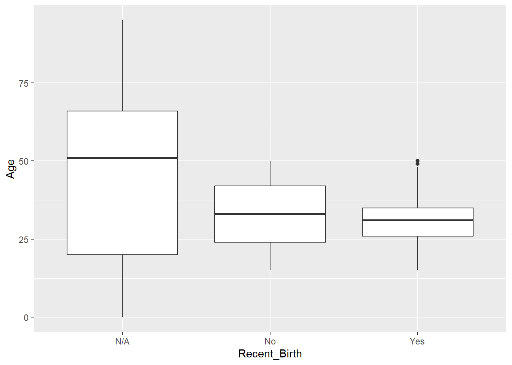
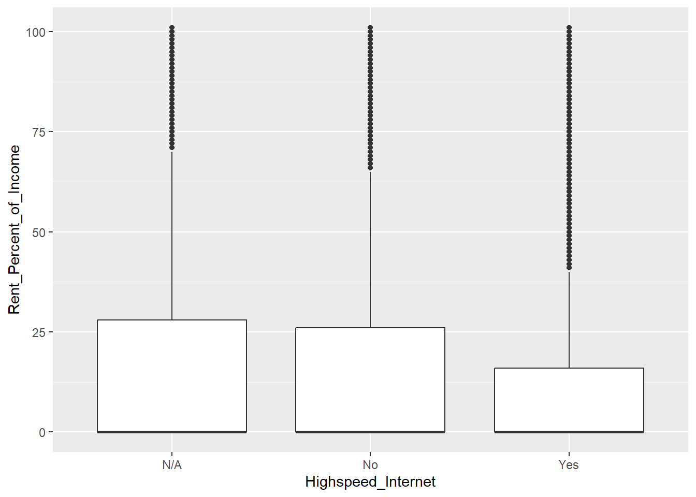
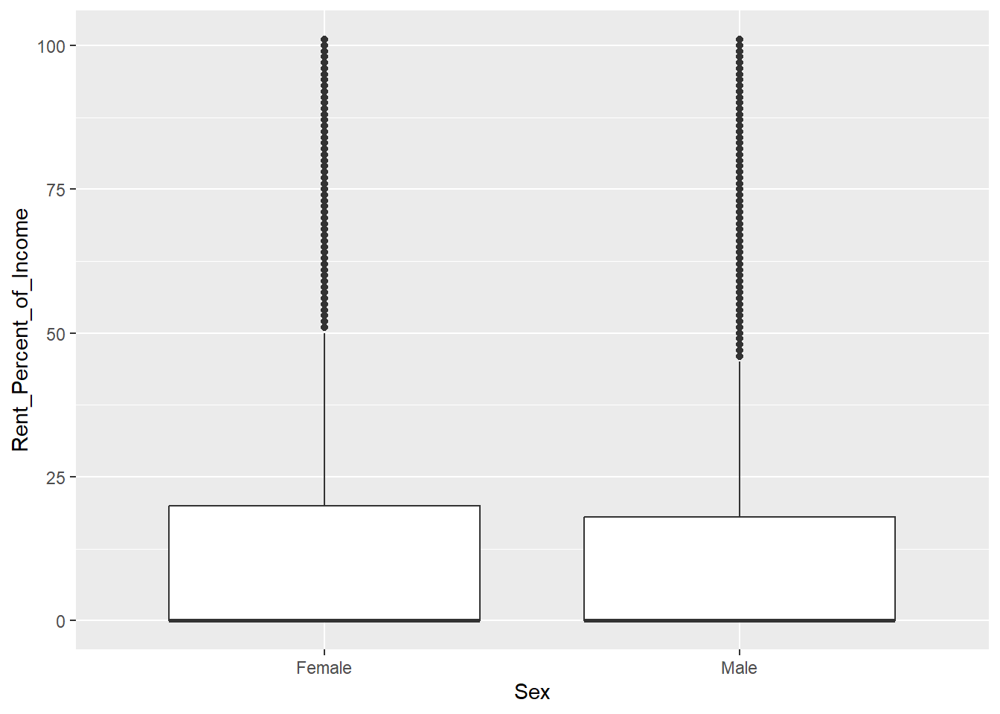
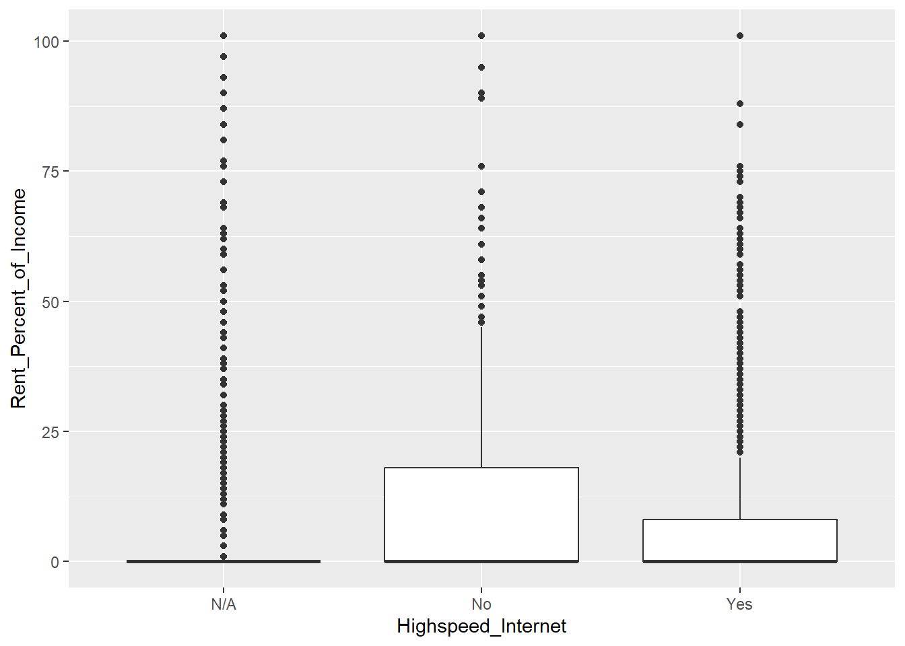
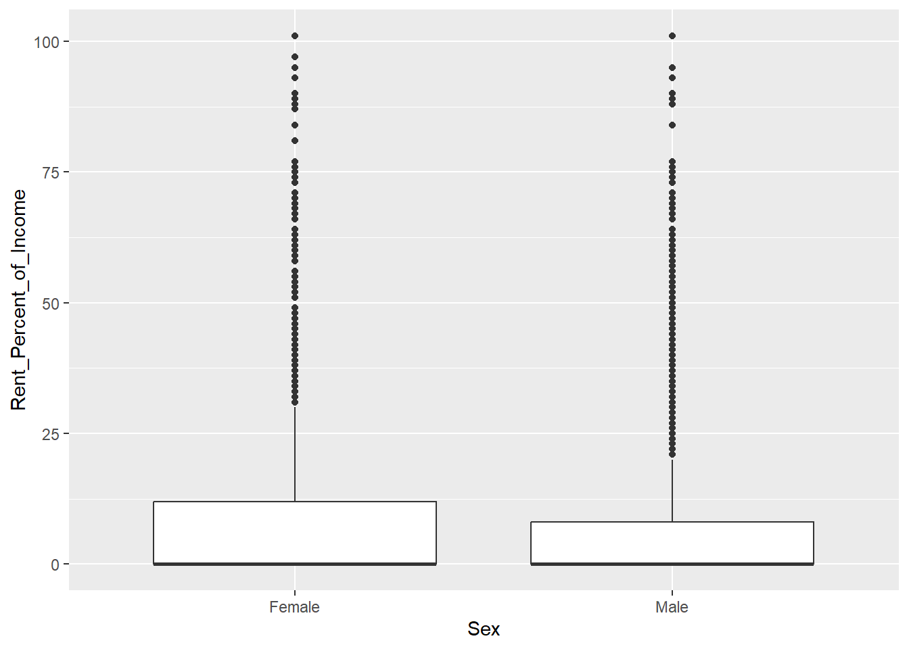

key <- "ef57316550be8b6492df7ca01b32a193c83ed8fc"
example_URL_census <- "https://api.census.gov/data/2022/acs/acs1/pums?get=SEX,PWGTP,MAR&SCHL=24&key=ef57316550be8b6492df7ca01b32a193c83ed8fc"
census_info <- httr::GET(example_URL_census)ST558 Project 1
Introduction
Our goal for this project is to write functions that will manipulate and process data sets that come from the Public Use Microdata Sample (PUMS) Census API. This API gives pseudo person-level data. We’ll create generic functions to automatically summarize and plot the returned data.
Basic Example
To start off and gain familiarity with using the Census API, we did a basic query following the Census examples and class notes. We saved the query as an R object named census_info. This helped us see how using R to grab data by API works and test our helper functions.
Data Processing
To be able to write a customizable function to query the Census API, we wrote a couple of helper functions. get_tibble() takes what is returned by GET() and turns it into a tibble. We tested get_tibble() with our census_info R object that we created earlier and saved the tibble as a tibble named census_tibble. The second helper function named format_num_and_cat_vars makes numeric variable columns numeric, time columns period objects, and categorical columns factors.
get_tibble <- function(data_info){
parsed <- fromJSON(rawToChar(data_info$content))
num_columns <- length(parsed[1,])
census_data <- data.frame(parsed[-1,])
names(census_data) <- parsed[1,]
return(as_tibble(census_data))
}
#Testing our function
census_tibble <- get_tibble(census_info)
head(census_tibble)# A tibble: 6 × 4
SEX PWGTP MAR SCHL
<chr> <chr> <chr> <chr>
1 2 6 5 24
2 2 23 2 24
3 1 23 3 24
4 1 80 5 24
5 1 16 1 24
6 1 107 3 24 format_num_and_cat_vars <- function(data_tibble, numer_vars, cat_vars){
# process JWAP time variable
if('JWAP' %in% numer_vars){
#lines from class discussion:
#get the JWAP info
temp <- httr::GET("https://api.census.gov/data/2022/acs/acs1/pums/variables/JWAP.json")
#turn it into a list
temp_list <- temp$content |> rawToChar() |>jsonlite::fromJSON()
#grab just the names of JWAP and their values
JWAP <- temp_list$values$item
#reorder just so it is clearer
JWAP_values <- JWAP[sort(names(JWAP))]
JWAP_values <- as_tibble(JWAP_values)
colnames(JWAP_values) <- as.numeric(names(JWAP_values))
# convert JWAP to numeric
data_tibble <- data_tibble |>
mutate(JWAP = as.numeric(JWAP))
# make new column for JWAP time values of type Period
data_tibble['JWAP_time'] <- hm("0, 0")
# fill in values for JWAP_time column
for(i in seq_along(data_tibble$JWAP)){
if(!data_tibble$JWAP[i]== 0){
val <- data_tibble$JWAP[i]
val <- JWAP_values[val+1]
time1 <- lubridate::hm(substring(val, 1, regexpr('to', val,)-2))
time2 <- lubridate::hm(substring(val, regexpr('to', val,)+3))
# Only time differentials in the minute attribute are handled here
diff <- time2-time1
if(diff@hour>0 | second(diff)>0){stop("can't handle time diff")}
min_offset <- floor(diff@minute/2)
sec_offset <- (diff@minute/2 - floor(diff@minute/2))*60
time <- time1 + lubridate::hms(paste("0", min_offset, sec_offset, sep=", "))
# add '12' to the hour if the time is p.m.
if(grepl('p.m.', val) & (time@hour!=12)){
time <- time + lubridate::hms('12, 0, 0')
}
data_tibble$JWAP_time[i] <- time
}
}
# replace JWAP column with JWAP_time
data_tibble <- data_tibble |>
select(!c(JWAP)) |>
rename(JWAP=JWAP_time)
}
# process JWDP time variable
if('JWDP' %in% numer_vars){
#lines from class discussion:
#get the JWDP info
temp <- httr::GET("https://api.census.gov/data/2022/acs/acs1/pums/variables/JWDP.json")
#turn it into a list
temp_list <- temp$content |> rawToChar() |>jsonlite::fromJSON()
#grab just the names of JWDP and their values
JWDP <- temp_list$values$item
#reorder just so it is clearer
JWDP_values <- JWDP[sort(names(JWDP))]
JWDP_values <- as_tibble(JWDP_values)
colnames(JWDP_values) <- as.numeric(names(JWDP_values))
# convert JWDP to numeric
data_tibble <- data_tibble |>
mutate(JWDP = as.numeric(JWDP))
# make new column for JWDP time values of type Period
data_tibble['JWDP_time'] <- hm("0, 0")
# fill in values for JWDP_time column
for(i in seq_along(data_tibble$JWDP)){
if(!data_tibble$JWDP[i]== 0){
val <- data_tibble$JWDP[i]
val <- JWDP_values[val+1]
time1 <- lubridate::hm(substring(val, 1, regexpr('to', val,)-2))
time2 <- lubridate::hm(substring(val, regexpr('to', val,)+3))
# Only time differentials in the minute attribute are handled here
diff <- time2-time1
if(diff@hour>0 | second(diff)>0){stop("can't handle time diff")}
min_offset <- floor(diff@minute/2)
sec_offset <- (diff@minute/2 - floor(diff@minute/2))*60
time <- time1 + lubridate::hms(paste("0", min_offset, sec_offset, sep=", "))
# add '12' to the hour if the time is p.m.
if(grepl('p.m.', val) & (time@hour!=12)){
time <- time + lubridate::hms('12, 0, 0')
}
data_tibble$JWDP_time[i] <- time
}
}
# replace JWDP column with JWDP_time
data_tibble <- data_tibble |>
select(!c(JWDP)) |>
rename(JWDP=JWDP_time)
}
####################################################################################################
# map the received values of categorical variables to their meaningful values and convert to factors
if("FER" %in% cat_vars){
data_tibble <- data_tibble |>
mutate(data_tibble, Recent_Birth=case_match(FER, "0"~"N/A", "1"~"Yes", "2"~"No")) |>
mutate(Recent_Birth=as.factor(Recent_Birth)) |>
select(!c("FER"))
}
if("SEX" %in% cat_vars){
data_tibble <- data_tibble |>
mutate(data_tibble, Sex=case_match(SEX, "1"~"Male", "2"~"Female")) |>
mutate(Sex=as.factor(Sex)) |>
select(!c("SEX"))
}
if("HHL" %in% cat_vars){
data_tibble <- data_tibble |>
mutate(data_tibble, Language=case_match(HHL, "0"~"N/A", "1"~"English Only", "2"~"Spanish", "3"~"Other Indo-European languages", "4"~"Asian and Pacific Island languages", "5"~"Other Language")) |>
mutate(Language=as.factor(Language)) |>
select(!c("HHL"))
}
if("HISPEED" %in% cat_vars){
data_tibble <- data_tibble |>
mutate(data_tibble, Highspeed_Internet=case_match(HISPEED, "0"~"N/A", "1"~"Yes", "2"~"No")) |>
mutate(Highspeed_Internet=as.factor(Highspeed_Internet)) |>
select(!c("HISPEED"))
}
if("JWTRNS" %in% cat_vars){
data_tibble <- data_tibble |>
mutate(data_tibble, Transportation_to_Work=case_match(JWTRNS, "0"~"N/A", "1"~"Car, truck, or van", "2"~"Bus", "3"~"Subway or elevated rail", "4"~"Long-distance train or commuter rail", "5"~"Light rail, streetcar, or trolley", "6"~"Ferryboat", "7"~"Taxicab", "8"~"Motorcycle", "9"~"Bicycle", "10"~"Walked", "11"~"Worked from home", "12"~"Other method")) |>
mutate(Transportation_to_Work=as.factor(Transportation_to_Work)) |>
select(!c("JWTRNS"))
}
if("SCH" %in% cat_vars){
data_tibble <- data_tibble |>
mutate(data_tibble, School_Enrollment=case_match(SCH, "0"~"N/A", "1"~"No", "2"~"Public", "3"~"private")) |>
mutate(School_Enrollment=as.factor(School_Enrollment)) |>
select(!c("SCH"))
}
if("SCHL" %in% cat_vars){
data_tibble <- data_tibble |>
mutate(data_tibble, Educational_Attainment=case_match(SCHL, "0"~"N/A", "1"~"None", "2"~"Nursery/Preschool", "3"~"Kindergarten", "4"~"Grade 1", "5"~"Grade 2", "6"~"Grade 3", "7"~"Grade 4", "8"~"Grade 5", "9"~"Grade 6", "10"~"Grade 7", "11"~"Grade 8", "12"~"Grade 9", "13"~"Grade 10", "14"~"Grade 11", "15"~"Grade 12, no diploma", "16"~"HS Diploma", "17"~"GED or alt cred", "18"~"Some college (<1 year)", "19"~"Some college (>1 year), no degree", "20"~"Associate's degree", "21"~"Bachelor's degree", "22"~"Master's degree", "23"~"Professional degree beyond a bachelor's degree", "24"~"Doctorate degree")) |>
mutate(Educational_Attainment=as.factor(Educational_Attainment)) |>
select(!c("SCHL"))
}
####################################################################################################
# convert numeric vars to numeric type, rename numeric columns to meaningful names
data_tibble <- data_tibble |>
mutate(across(numer_vars[numer_vars !="JWAP" & numer_vars!="JWDP"], as.numeric)) |>
rename(any_of(c(Age="AGEP", Gas_Bill_Monthly="GASP", Rent_Percent_of_Income="GRPIP", Arrive_at_Work="JWAP", Depart_for_Work="JWDP", Work_Travel_Time="JWMNP", PUMS_Weight="PWGTP", State="state")))
return(data_tibble)
}We created four vectors named all_numer_vars, all_cat_vars, all_geog, key_query that had our variables that we would need for our future function for input validation.
#constants needed in the code chunk below
all_numer_vars = c("AGEP", "GASP", "GRPIP", "JWAP", "JWDP", "JWMNP", "PWGTP")
all_cat_vars = c("FER", "HHL", "HISPEED", "JWTRNS", "SCH", "SEX", "SCHL")
all_geog = c("All", "Region", "Division", "State")
key_query <- "&key=ef57316550be8b6492df7ca01b32a193c83ed8fc"Customizable function to query the API
The function named query_census_api has the following arguments: year, numer_vars, cat_vars, geog, and geog_values. It also uses the functions get_tibble and format_num_and_cat_vars created earlier to return our data request into a nice usable format.
year: this argument represents the “Year of survey” with the year 2022 as the default year and the input values must be between 2010 and 2022, except there is no data for the year 2020.
numer_vars: this argument represents the numeric variables to be returned with ‘AGEP’ and ‘PWGTP’ as defaults. The variable ‘PWGTP’ will always be returned. This input parameter has the following options for the user: AGEP, GASP, GRPIP, JWAP (time), JWDP (time), and JWMNP.
cat_vars: this argument represents the categorical variables to be returned with ‘SEX’ as the default value. This input parameter has the following options for the user: FER, HHL, HISPEED, JWTRNS, SCH, SCHL, and SEX.
geog: this argument represents the geography level to be returned with ‘State’ as the default value. This input parameter has the following options for the user: All, Region, Division, and State
geog_values: this argument represents the value by which to subset the region. The default is ‘12’, which is the value for Florida, the state our group was assigned.
query_census_api <- function(year=2022, numer_vars=c("AGEP"), cat_vars=c("SEX"), geog="State", geog_values=c('12')){
######################INPUT VALIDATION######################
#year validation
if ((!year %in% c(2010:2019, 2021:2022))){
stop("Year must be between 2010 and 2022, excluding 2020.")
}
#numer_vars validation
numer_vars <- union(numer_vars, "PWGTP")
if(length(numer_vars) < 2) {
stop("Not enough numerical variables specified. Options are AGEP, GASP, GRPIP, JWAP, JWDP, JWMNP, and PWGTP")
} else if(length(union(all_numer_vars, numer_vars)) > length(all_numer_vars)){
stop("numer_vars includes variables which are not in the allowed set, which is AGEP, GASP, GRPIP, JWAP, JWDP, JWMNP, and PWGTP")
}
#cat_vars validation
if(length(cat_vars) < 1) {
stop("Not enough categorical variables specified. Options are FER, HHL, HISPEED, JWTRNS, SCH, SCHL, and SEX")
} else if(length(union(all_cat_vars, cat_vars)) > length(all_cat_vars)){
stop("cat_vars includes variables which are not in the allowed set, which is FER, HHL, HISPEED, JWTRNS, SCH, SCHL, and SEX")
}
#geog validation
if (!(geog %in% all_geog)){
stop("invalid value for geog. Options are All, Region, Division, and State")
}
######################INPUT VALIDATION######################
#now to build the query URL
vars_query <- paste0(c(numer_vars, cat_vars), collapse=",")
geog_query <- character()
if(geog != "All"){
if (length(geog_values) == 0) {
geog_query <- paste0("&for=", tolower(geog), ":*")
} else {
geog_query <- paste0("&for=", tolower(geog), ":", paste0(geog_values, collapse=","))
}
}
URL_census <- paste0("https://api.census.gov/data/",
year,
"/acs/acs1/pums?",
"get=",
vars_query,
geog_query,
key_query)
# fetch the data using the new URL, get the data in a tibble, and clean the data using the format function
data_info <- httr::GET(URL_census)
data = get_tibble(data_info)
clean_data = format_num_and_cat_vars(data, numer_vars, cat_vars)
return(clean_data)
}
#Testing our function
data_tibble_test <- query_census_api(year=2018, numer_vars=c("AGEP"), cat_vars=c("HISPEED"))
head(data_tibble_test)# A tibble: 6 × 4
Age PUMS_Weight State Highspeed_Internet
<dbl> <dbl> <chr> <fct>
1 15 26 12 N/A
2 72 24 12 N/A
3 37 31 12 N/A
4 21 76 12 N/A
5 18 72 12 N/A
6 38 62 12 N/A To allow the user to specify multiple years of survey data, we wrote the R function query_with_years.
query_with_years <- function(years=c(2022), ...){
# initialize an empty tibble
combined_tibble = tibble()
# loop through the years and add on each year's data
for(i in seq_along(years)){
year_tibble <- query_census_api(year=years[i], ...) |>
mutate(Year=years[i])
combined_tibble <- bind_rows(combined_tibble, year_tibble)
}
# add 'census' class to tibble
class(combined_tibble) <- c("census", class(combined_tibble))
return(combined_tibble)
}
#Testing our function
data_tibble <- query_with_years(years=c(2019), numer_vars=c("AGEP", "GASP"), cat_vars=c("FER", "HHL", "SEX"))
head(data_tibble)# A tibble: 6 × 8
Age Gas_Bill_Monthly PUMS_Weight State Recent_Birth Sex Language Year
<dbl> <dbl> <dbl> <chr> <fct> <fct> <fct> <dbl>
1 33 3 32 12 N/A Male N/A 2019
2 19 3 45 12 No Female N/A 2019
3 38 3 70 12 N/A Male N/A 2019
4 60 3 17 12 N/A Male N/A 2019
5 18 3 134 12 N/A Male N/A 2019
6 29 3 11 12 N/A Male N/A 2019Writing a Generic Function for Summarizing
Now that we have our data, let’s try to do something with it. We created a summary() function for the census class that takes in three arguments: the tibble data set, numeric variables to summarize, and categorical variables to summarize. If no numeric variables are specified, all will be summarized; similar for categorical variables.
summary.census <- function(data_tibble, numer_vars=c("All"), cat_vars=c("All")){
#if user doesn't specify numerical variables to summarize
if("All" %in% numer_vars) {
numer_vars <- c()
for(i in seq_along(names(data_tibble))){
if (is.numeric(data_tibble[[i]]) & names(data_tibble)[i] != "PUMS_Weight") {
numer_vars <- c(numer_vars, names(data_tibble)[i])
}
}
}
#if user doesn't specify categorical variables to summarize
if("All" %in% cat_vars){
cat_vars <- c()
for(i in seq_along(names(data_tibble))){
if (!is.numeric(data_tibble[[i]])) {
cat_vars <- c(cat_vars, names(data_tibble)[i])
}
}
}
# start a blank tibble for the numerical variable summary
numer_summary = tibble()
# grab the weight data for numerical calculations
weight_col <- data_tibble$PUMS_Weight
# numerical var calculations
for (numer_var in numer_vars){
#Find mean and sd of numeric variables
sample_mean <- sum(data_tibble[, numer_var]*weight_col)/sum(weight_col)
sample_sd <- sqrt(sum(data_tibble[, numer_var]**2*weight_col)/sum(weight_col)-sample_mean**2)
# add line to summary tibble
numer_summary <- bind_rows(numer_summary, tibble(variable=numer_var, mean=sample_mean, sd=sample_sd))
}
# start a blank list for the categorical variable summary
cat_summary = list()
# get counts for each cat var
for (cat_var in cat_vars){
var_count <- data_tibble |>
count(data_tibble[!!cat_var]) |>
rename(count=n)
# add tibble to summary list
cat_summary <- c(cat_summary, list(var_count))
}
# label the categorical variable count summaries
names(cat_summary) <- cat_vars
# return all summaries
return(list(numerical=numer_summary, categorical=cat_summary))
}
#test function
# summary_test<-summary.census(data_tibble,numer_vars=c("Age"),cat_vars=c("Sex"))
summary_test<-summary(data_tibble)
summary_test$numerical# A tibble: 3 × 3
variable mean sd
<chr> <dbl> <dbl>
1 Age 42.0 23.9
2 Gas_Bill_Monthly 9.56 27.5
3 Year 2019 0 summary_test$categorical$State
# A tibble: 1 × 2
State count
<chr> <int>
1 12 205294
$Recent_Birth
# A tibble: 3 × 2
Recent_Birth count
<fct> <int>
1 N/A 165399
2 No 38118
3 Yes 1777
$Sex
# A tibble: 2 × 2
Sex count
<fct> <int>
1 Female 105795
2 Male 99499
$Language
# A tibble: 6 × 2
Language count
<fct> <int>
1 Asian and Pacific Island languages 4212
2 English Only 134584
3 N/A 8202
4 Other Indo-European languages 12678
5 Other Language 1786
6 Spanish 43832Creating a Generic Plotting Function
Finally, we created a basic plot() function for the census class that takes in three arguments: the tibble data set, one numeric variable, and one categorical variable that you want to summarize. This function creates side-by-side box plots for the numerical variable, grouped by the categorical variable.
plot.census <- function(data_tibble, numer_var=NULL, cat_var=NULL){
# input validation
if(is.null(numer_var) | is.null(cat_var)) {stop("Please specify 1 numerical and 1 categorical variable.")}
if(!(numer_var %in% names(data_tibble)) | !(cat_var %in% names(data_tibble))) {stop("Please specify variables that are in the tibble.")}
# creating a basic boxplot
graph <- ggplot(data_tibble,
aes(x = get(cat_var), y = get(numer_var), weight = PUMS_Weight)) +
geom_boxplot() +
labs(x=cat_var, y=numer_var)
return(graph)
}
# test the plot function
plot(data_tibble, numer_var="Age", cat_var="Recent_Birth")
End example (Conclusion)
We have created several functions (get_tibble,format_num_and_cat_vars,query_census_api,query_with_years,summary, and plot) that will manipulate and process data sets that come from the Public Use Microdata Sample (PUMS) Census API. Let’s show a couple of simple examples of using them.
In the first example, we show how to use the summary and plot functions to make interesting comparisons of rent for each sex, and highspeed internet by rent.
The variables we use are:
“AGEP”/“Age”=Age
“GRPIP”/“Rent_Percent_of_Income”=Gross rent as a percentage of household income past 12 months
“HISPEED”/“Highspeed_Internet”=Broadband (high speed) Internet service such as cable, fiber optic, or DSL service
“SEX”/“Sex”=sex of respondant
geog=“State”
geog_values=“12”(“Florida/FL”)
#Using query_with_years to fetch data
data_tibble_test <- query_with_years(years=c(2018), numer_vars=c("AGEP","GRPIP"), cat_vars=c("SEX","HISPEED"), geog="State", geog_values=c('12'))
#summary stats on selected variables
summary_test_selected<-summary(data_tibble_test, cat_vars=c("Sex", "Highspeed_Internet"), numer_vars=c("Age", "Rent_Percent_of_Income"))
summary_test_selected$numerical
# A tibble: 2 × 3
variable mean sd
<chr> <dbl> <dbl>
1 Age 41.7 23.9
2 Rent_Percent_of_Income 12.5 23.4
$categorical
$categorical$Sex
# A tibble: 2 × 2
Sex count
<fct> <int>
1 Female 103907
2 Male 98253
$categorical$Highspeed_Internet
# A tibble: 3 × 2
Highspeed_Internet count
<fct> <int>
1 N/A 27164
2 No 25085
3 Yes 149911#box plot for Rent_Percent_of_Income and Sex variables
plot(data_tibble_test, numer_var="Rent_Percent_of_Income", cat_var="Highspeed_Internet")
#box plot for Rent_Percent_of_Income and Sex variables
plot(data_tibble_test, numer_var="Rent_Percent_of_Income", cat_var="Sex")
From the boxplots above, it seems that females had a bit higher rent as a percent of their income than males, and that those with lower rent as a percent of their income were more likely to have highspeed internet compared to those with higher rent.
The second example, I am going to use the query_with_years function to look at the same variables as above, but for Alaska, which is “ST=2”. You can find the different “ST” codes here.
#Using query_with_years to fetch data
data_tibble_test <- query_with_years(years=c(2018), numer_vars=c("AGEP","GRPIP"), cat_vars=c("SEX","HISPEED"), geog="State", geog_values=c('2'))
#summary stats on selected variables
summary_test_selected<-summary(data_tibble_test, cat_vars=c("Sex", "Highspeed_Internet"), numer_vars=c("Age", "Rent_Percent_of_Income"))
summary_test_selected$numerical
# A tibble: 2 × 3
variable mean sd
<chr> <dbl> <dbl>
1 Age 36.1 22.0
2 Rent_Percent_of_Income 9.22 19.7
$categorical
$categorical$Sex
# A tibble: 2 × 2
Sex count
<fct> <int>
1 Female 3204
2 Male 3507
$categorical$Highspeed_Internet
# A tibble: 3 × 2
Highspeed_Internet count
<fct> <int>
1 N/A 1540
2 No 1380
3 Yes 3791#box plot for Rent_Percent_of_Income and Sex variables
plot(data_tibble_test, numer_var="Rent_Percent_of_Income", cat_var="Highspeed_Internet")
#box plot for Rent_Percent_of_Income and Sex variables
plot(data_tibble_test, numer_var="Rent_Percent_of_Income", cat_var="Sex")
This second example shows similar patterns in the data, but more drastic than the Florida example.